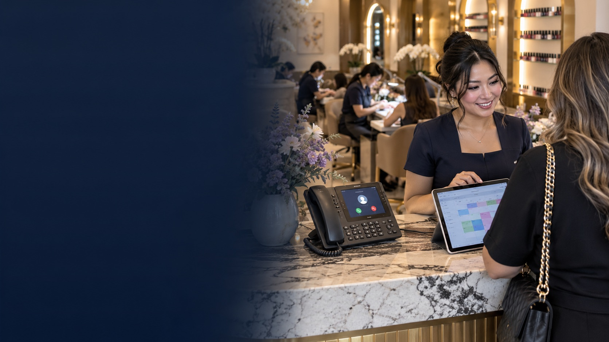

LIÊN HỆ ĐẦU TIÊNLễ tân AI
Đón cuộc gọi của khách khi đội ngũ đang bận
Quầy lễ tân đang hỗ trợ khách trực tiếp thì một người khác gọi đến hỏi thông tin.
GIÁ TRỊ MANG LẠI
Câu hỏi thường gặp được giải đáp mà nhân viên không phải rời khách đang phục vụ.
NEXORA TOUCH giúp doanh nghiệp tìm đúng công cụ ở từng giai đoạn: tổ chức công việc, tạo điểm chạm với khách và nhìn rõ cơ hội phát triển.


Một ngày làm việc tốt hơn cho những người chăm sóc từng cuộc hẹn.
Từ áp lực hằng ngày tại một salon đang hoạt động ở Houston, NEXORA TOUCH đặt ra câu hỏi đơn giản: điều gì sẽ thay đổi nếu công nghệ gánh bớt phần việc xung quanh dịch vụ?

Khách vừa đến thì điện thoại reo. Người thợ cần biết lịch hẹn tiếp theo. Cuối ngày, chủ tiệm còn phải xem lại dịch vụ, thanh toán và việc chăm sóc sau buổi hẹn. Tại BITCOIN NAIL BAR, đội ngũ nhận ra những công việc ấy cùng tranh giành một nguồn lực: sự tập trung của con người.
Trải nghiệm ấy trở thành điểm khởi đầu của NEXORA TOUCH: những công cụ đi theo nhịp làm việc của salon, giúp mọi người có thêm thời gian tập trung vào khách.
Chọn một tình huống để xem từng sản phẩm hỗ trợ salon như thế nào.

Câu hỏi thường gặp được giải đáp mà nhân viên không phải rời khách đang phục vụ.
Hình minh họaNhững cột mốc đã xác nhận của công ty nối tiếp một mục tiêu dài hạn của tập đoàn VLINKPAY.
Khởi đầu hành trình xây dựng doanh nghiệp của Brian Nguyen.
Công ty mẹ tại Houston bắt đầu xây dựng các nền tảng thiết thực cho doanh nghiệp nhỏ.
NEXORA TOUCH được thử nghiệm tại BITCOIN NAIL BAR khi hệ sản phẩm tiếp tục phát triển.
Mục tiêu dài hạn của VLINKPAY là hướng tới IPO vào khoảng năm 2030, tùy thuộc vào quá trình thực hiện và điều kiện thị trường.
Mốc 2030 là mục tiêu của VLINKPAY, chưa phải ngày niêm yết đã công bố hoặc kế hoạch IPO riêng của NEXORA TOUCH.
Công nghệ nên đảm nhận phần việc xung quanh dịch vụ để người làm dịch vụ có thể tập trung chăm sóc khách.
Bốn thời điểm trong một buổi hẹn cho thấy giá trị của từng công cụ NEXORA TOUCH, từ cuộc gọi đầu tiên đến quyết định tiếp theo của chủ tiệm.
Quầy lễ tân đang hỗ trợ khách trực tiếp thì một người khác gọi đến hỏi thông tin.
Câu hỏi thường gặp được giải đáp mà nhân viên không phải rời khách đang phục vụ.
Khách quét mã QR của salon; sau đó đội ngũ theo dõi việc nhận khách và thông tin dịch vụ trong giao diện vận hành.
Khách biết bắt đầu từ đâu, còn nhân viên thấy rõ việc cần làm tiếp theo.
Khách hoàn tất thanh toán và có cách chia sẻ phản hồi sau dịch vụ.
Đội ngũ thấy kết quả của buổi hẹn và hiểu trải nghiệm của khách.

Chủ tiệm nhìn xa hơn từng cuộc hẹn để xem xu hướng của cả doanh nghiệp.
Thông tin rõ ràng hơn giúp chủ tiệm chọn điều cần cải thiện cho nhân viên và khách trong tương lai.
Các hình chỉ minh họa quy trình, không phải ảnh chụp sản phẩm đang vận hành.

Nhà sáng lập kiêm CEO VLINKPAY · Nhà sáng lập NEXORA TOUCH
Sau hơn 25 năm trong ngành nail tại Mỹ, Brian vẫn gắn bó với hoạt động hằng ngày qua BITCOIN NAIL BAR ở Houston. NEXORA TOUCH lớn lên từ những vấn đề chủ tiệm và nhân viên gặp tại quầy lễ tân thực tế.
Ông thành lập VLINKPAY tại Houston năm 2022, sau khi VLINK ra đời năm 2019. Ông từng cố vấn cho các tổ chức lớn trong lĩnh vực công nghệ, tài chính và fintech, đồng thời có kinh nghiệm về blockchain và AI.
“Chủ tiệm lo làm đẹp cho khách. Mình lo tất cả phần còn lại.”
VLINKPAY là công ty mẹ của các công ty riêng biệt, mỗi công ty tập trung vào một nhu cầu khác nhau. BITCOIN NAIL BAR là salon do Brian vận hành và là nơi thử nghiệm đầu tiên của NEXORA TOUCH.
Sơ đồ giới thiệu các thương hiệu và dự án trong hệ sinh thái; không đại diện cho tích hợp kỹ thuật đang hoạt động hoặc quan hệ sở hữu pháp lý.
VLINKPAY phát triển các nền tảng fintech ứng dụng AI và công cụ kinh doanh cho doanh nghiệp nhỏ. Bên cạnh các giải pháp thanh toán, công ty xây dựng những thương hiệu riêng như NEXORA TOUCH phục vụ vận hành salon.
Khám phá sản phẩm VLINKPAY ↗Phát hành và quản lý thẻ quà tặng, phiếu ưu đãi điện tử.
Mạng lưới điểm kinh doanh hỗ trợ nạp, rút tiền mặt và tiếp cận giá trị số.
Hỗ trợ doanh nghiệp chấp nhận thanh toán bằng tiền mã hóa.
Giải pháp ví tài sản số.
Giải pháp thẻ để tiếp cận và sử dụng giá trị số.
Giao dịch tài sản số ngang hàng.
Các dự án khác trong hệ sinh thái còn có TAX IQ và VLINKPAY FOUNDATION. Mỗi công ty trong hệ sinh thái là một pháp nhân LLC riêng.
Truy cập website chính thức để xem thông tin sản phẩm mới nhất và bước tiếp theo.